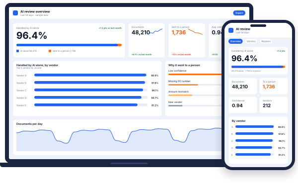
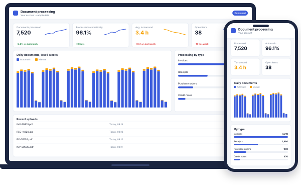
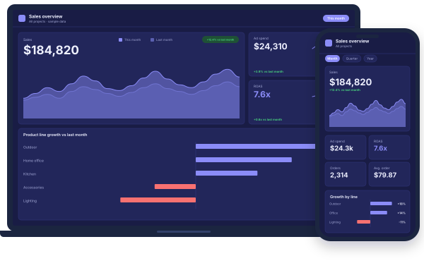
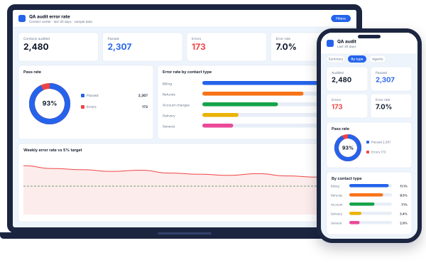
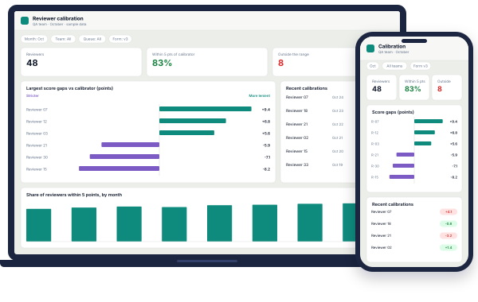

Who I am
Hi, I’m Tin.
Data Analyst and Analytics Engineer based in Cebu, Philippines, working remotely.
I help teams trust their numbers. I fix website tracking, build clean data layers, and design dashboards people actually open.
Experience
5+ years in analytics.
Analytics and project management, mostly remote for international teams. Client names are kept private.
- Dashboards and reportingSince 2021, 5+ yrs
- Web and marketing analyticsSince 2021, 5+ yrs
- Forecasting and statisticsSince 2021, 5+ yrs
- Project leadershipSince 2022, 4+ yrs
- Data privacy and complianceSince 2023, 3+ yrs
- Data engineering and automationSince 2024, 2+ yrs
Major roles
-
to now
Data Analyst and Analytics Engineer
- Building
-
- A data layer on AWS S3 and Athena that feeds an AI document review dashboard.
- A per-vendor confidence model that decides when invoices can skip human review.
- Customer lifetime value and cohort forecasts that guide pricing and retention.
- GA4 and Tag Manager tracking for 12 client websites, including consent and attribution fixes.
- Embedded Looker Studio reports that each customer team sees on its own.
- Automated funnel reports that turn order exports into daily Google Sheets dashboards.
- QA web apps and calibration dashboards in Apps Script.
- Demand forecasts for construction, and sales and branch dashboards in Power BI.
- Using
-
- SQL
- Python
- BigQuery
- AWS S3
- Athena
- DuckDB
- MotherDuck
- GA4
- Google Tag Manager
- Looker Studio
- Preset
- Power BI
- Apps Script
- Git
- ClickUp
- Monday.com
- Zoho Projects
- Doing
-
- Turning messy data into one trusted source, with every metric defined once.
- Checking the numbers before recommending a fix, especially on traffic drops.
- Auditing A/B tests and reconciling revenue before anyone celebrates a win.
- Explaining results in plain language for non-technical teams.
- Keeping QA preliminary audits 100% clean.
-
to
Data Project Manager
- Building
-
- A government-funded DOST project, delivered to 100% completion.
- KPI dashboards and automated reporting for daily operations.
- Using
-
- Trello
- Milestone planning
- KPI dashboards
- Data Privacy Act compliance
- Doing
-
- Led a team of data scientists and business analysts.
- Finished the DOST project using 85% of its funding, with 95% to 100% of milestones on time.
- Served as Compliance Officer for Privacy.
-
to
Front-end Developer and Project Manager
- Building
-
- Dynamic and static websites and custom systems for clients.
- Module Zero, an internship program I founded and directed.
- Using
-
- HTML
- CSS
- JavaScript
- Trello
- Asana
- Requirements gathering
- QA testing
- Doing
-
- Managed a development team from client requirements through release.
- Tested every build before launch. It is why I care how data is built, not just how it is read.
Tech
What I work with.
- Tracking
- GA4
- Google Tag Manager
- Consent Mode
- HubSpot
- Salesforce
- Data
- SQL
- Python
- BigQuery
- AWS S3
- Athena
- DuckDB
- MotherDuck
- Dashboards
- Looker Studio
- Preset
- Power BI
- Apps Script
- Project management
- ClickUp
- Monday.com
- Zoho Projects
- Trello
- Asana
- Workflow
- Git
- Automated data tests
- Data dictionaries
Certifications
Analytics and privacy, both certified.
-
TÜV Rheinland
Data Protection Officer (DPO) (TÜV)
Verify certificate -
Google
Google Analytics Certified
GA4 measurement and reporting
-
IBM · Coursera
IBM Data Science Professional Certificate
2026
-
Education
BS Computer Science, Data Science
University of the Philippines Cebu · Cum Laude
Projects and snapshots
Dashboards I’ve built.
Client work, anonymized. Shown with sample data on laptop and phone.

AI review overview
How many documents an AI handled alone, and why the rest went to a person.

Customer-facing embed
The same data, redesigned to sit inside a client’s own app.

Sales funnel
Sales vs last month, ad spend, ROAS and which product lines grew.

QA audit error rate
Which kinds of customer contact produce the most errors.

QA calibration
Which reviewers score more leniently or strictly than the calibrator.
More projects
-
Landlord response time
A fair first-reply metric for a rental marketplace, in working hours.
-
GA4 tracking fixes
Consent, attribution and conversion fixes across 12 client websites.
-
Customer lifetime value
Prediction and cohort models on a tested, version-controlled pipeline.
-
Invoice review threshold
A cautious confidence bar that decides when an AI can skip human review.
-
Dashboard tool evaluation
Testing open-source options to replace per-seat BI license fees.